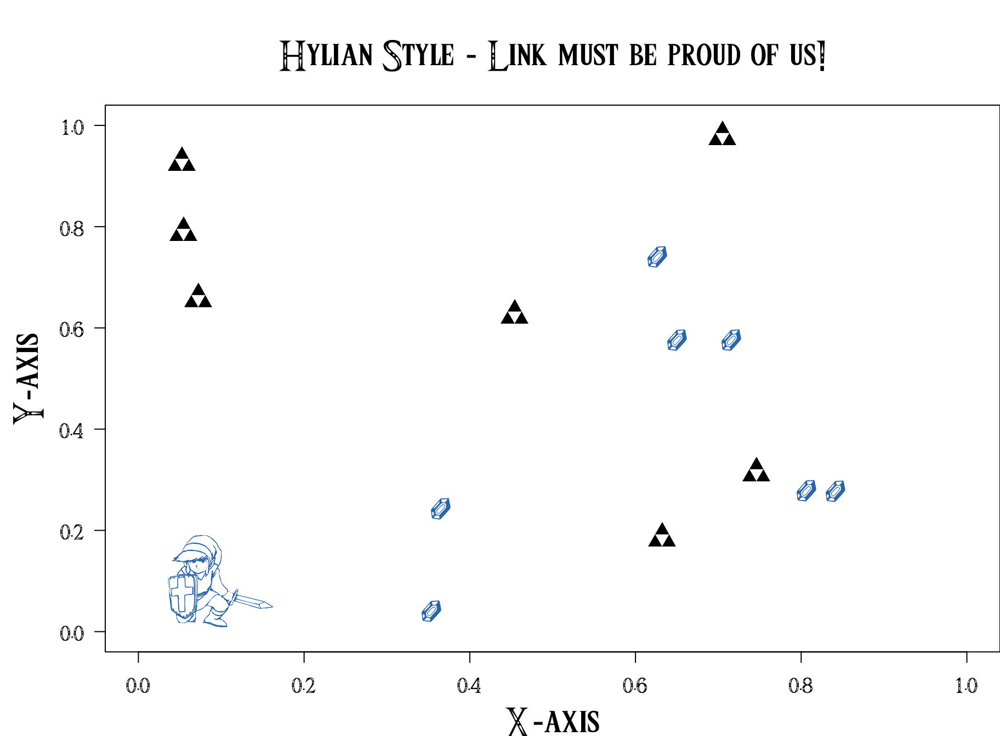

Here are the 5 steps you need to make your plot a hylian one!! May the triforce be with you!
Download the Triforce font
Open R and install showtext if not install
install.package(showtext)library(showtext)## Loading required package: sysfontsshowtext.auto()
font.files()## [1] "3270Medium.ttf"
## [2] "3270Narrow.ttf"
## [3] "3270SemiNarrow.ttf"
## [4] "Al Nile.ttc"
## [5] "Al Tarikh.ttc"
## [6] "AlBayan.ttc"
## [7] "AmericanTypewriter.ttc"
## [8] "Andale Mono.ttf"
## [9] "Anonymice Powerline Bold Italic.ttf"
## [10] "Anonymice Powerline Bold.ttf"
## [11] "Anonymice Powerline Italic.ttf"
## [12] "Anonymice Powerline.ttf"
## [13] "Apple Chancery.ttf"
## [14] "AppleGothic.ttf"
## [15] "AppleMyungjo.ttf"
## [16] "Arial Black.ttf"
## [17] "Arial Bold Italic.ttf"
## [18] "Arial Bold.ttf"
## [19] "Arial Italic.ttf"
## [20] "Arial Narrow Bold Italic.ttf"
## [21] "Arial Narrow Bold.ttf"
## [22] "Arial Narrow Italic.ttf"
## [23] "Arial Narrow.ttf"
## [24] "Arial Rounded Bold.ttf"
## [25] "Arial Unicode.ttf"
## [26] "Arial.ttf"
## [27] "Arimo Bold for Powerline.ttf"
## [28] "Arimo Bold Italic for Powerline.ttf"
## [29] "Arimo for Powerline.ttf"
## [30] "Arimo Italic for Powerline.ttf"
## [31] "Athelas.ttc"
## [32] "Ayuthaya.ttf"
## [33] "Baghdad.ttc"
## [34] "Bangla MN.ttc"
## [35] "Bangla Sangam MN.ttc"
## [36] "Baskerville.ttc"
## [37] "Beirut.ttc"
## [38] "BigCaslon.ttf"
## [39] "Bodoni 72 OS.ttc"
## [40] "Bodoni 72 Smallcaps Book.ttf"
## [41] "Bodoni 72.ttc"
## [42] "Bodoni Ornaments.ttf"
## [43] "Bradley Hand Bold.ttf"
## [44] "Brush Script.ttf"
## [45] "Chalkboard.ttc"
## [46] "ChalkboardSE.ttc"
## [47] "Chalkduster.ttf"
## [48] "Charter.ttc"
## [49] "Cochin.ttc"
## [50] "Comic Sans MS Bold.ttf"
## [51] "Comic Sans MS.ttf"
## [52] "Copperplate.ttc"
## [53] "Corsiva.ttc"
## [54] "Courier New Bold Italic.ttf"
## [55] "Courier New Bold.ttf"
## [56] "Courier New Italic.ttf"
## [57] "Courier New.ttf"
## [58] "Cousine Bold for Powerline.ttf"
## [59] "Cousine Bold Italic for Powerline.ttf"
## [60] "Cousine for Powerline.ttf"
## [61] "Cousine Italic for Powerline.ttf"
## [62] "D2Coding Bold for Powerline.ttf"
## [63] "D2Coding for Powerline.ttf"
## [64] "Damascus.ttc"
## [65] "DecoTypeNaskh.ttc"
## [66] "DejaVu Sans Mono Bold for Powerline.ttf"
## [67] "DejaVu Sans Mono Bold Oblique for Powerline.ttf"
## [68] "DejaVu Sans Mono for Powerline.ttf"
## [69] "DejaVu Sans Mono Oblique for Powerline.ttf"
## [70] "Devanagari Sangam MN.ttc"
## [71] "DevanagariMT.ttc"
## [72] "Didot.ttc"
## [73] "DIN Alternate Bold.ttf"
## [74] "DIN Condensed Bold.ttf"
## [75] "Diwan Kufi.ttc"
## [76] "Diwan Thuluth.ttf"
## [77] "Droid Sans Mono Dotted for Powerline.ttf"
## [78] "Droid Sans Mono for Powerline.otf"
## [79] "Droid Sans Mono Slashed for Powerline.ttf"
## [80] "EuphemiaCAS.ttc"
## [81] "Farah.ttc"
## [82] "Farisi.ttf"
## [83] "FontAwesome.otf"
## [84] "FuraMono-Bold Powerline.otf"
## [85] "FuraMono-Medium Powerline.otf"
## [86] "FuraMono-Regular Powerline.otf"
## [87] "Futura.ttc"
## [88] "Georgia Bold Italic.ttf"
## [89] "Georgia Bold.ttf"
## [90] "Georgia Italic.ttf"
## [91] "Georgia.ttf"
## [92] "GillSans.ttc"
## [93] "Go Mono Bold for Powerline.ttf"
## [94] "Go Mono Bold Italic for Powerline.ttf"
## [95] "Go Mono for Powerline.ttf"
## [96] "Go Mono Italic for Powerline.ttf"
## [97] "Gujarati Sangam MN.ttc"
## [98] "GujaratiMT.ttc"
## [99] "Gurmukhi MN.ttc"
## [100] "Gurmukhi Sangam MN.ttc"
## [101] "Gurmukhi.ttf"
## [102] "Hack-Bold.ttf"
## [103] "Hack-BoldItalic.ttf"
## [104] "Hack-Italic.ttf"
## [105] "Hack-Regular.ttf"
## [106] "Herculanum.ttf"
## [107] "Hoefler Text Ornaments.ttf"
## [108] "Hoefler Text.ttc"
## [109] "HylianSymbols.ttf"
## [110] "Impact.ttf"
## [111] "InaiMathi.ttf"
## [112] "Inconsolata Bold for Powerline.ttf"
## [113] "Inconsolata for Powerline.otf"
## [114] "Inconsolata-dz for Powerline.otf"
## [115] "Inconsolata-g for Powerline.otf"
## [116] "Iowan Old Style.ttc"
## [117] "ITFDevanagari.ttc"
## [118] "Kailasa.ttc"
## [119] "Kannada MN.ttc"
## [120] "Kannada Sangam MN.ttc"
## [121] "Kefa.ttc"
## [122] "Khmer MN.ttc"
## [123] "Khmer Sangam MN.ttf"
## [124] "Kokonor.ttf"
## [125] "Krungthep.ttf"
## [126] "KufiStandardGK.ttc"
## [127] "Lao MN.ttc"
## [128] "Lao Sangam MN.ttf"
## [129] "Literation Mono Powerline Bold Italic.ttf"
## [130] "Literation Mono Powerline Bold.ttf"
## [131] "Literation Mono Powerline Italic.ttf"
## [132] "Literation Mono Powerline.ttf"
## [133] "Luminari.ttf"
## [134] "Malayalam MN.ttc"
## [135] "Malayalam Sangam MN.ttc"
## [136] "Marion.ttc"
## [137] "Meslo LG L Bold for Powerline.ttf"
## [138] "Meslo LG L Bold Italic for Powerline.ttf"
## [139] "Meslo LG L DZ Bold for Powerline.ttf"
## [140] "Meslo LG L DZ Bold Italic for Powerline.ttf"
## [141] "Meslo LG L DZ Italic for Powerline.ttf"
## [142] "Meslo LG L DZ Regular for Powerline.ttf"
## [143] "Meslo LG L Italic for Powerline.ttf"
## [144] "Meslo LG L Regular for Powerline.ttf"
## [145] "Meslo LG M Bold for Powerline.ttf"
## [146] "Meslo LG M Bold Italic for Powerline.ttf"
## [147] "Meslo LG M DZ Bold for Powerline.ttf"
## [148] "Meslo LG M DZ Bold Italic for Powerline.ttf"
## [149] "Meslo LG M DZ Italic for Powerline.ttf"
## [150] "Meslo LG M DZ Regular for Powerline.ttf"
## [151] "Meslo LG M Italic for Powerline.ttf"
## [152] "Meslo LG M Regular for Powerline.ttf"
## [153] "Meslo LG S Bold for Powerline.ttf"
## [154] "Meslo LG S Bold Italic for Powerline.ttf"
## [155] "Meslo LG S DZ Bold for Powerline.ttf"
## [156] "Meslo LG S DZ Bold Italic for Powerline.ttf"
## [157] "Meslo LG S DZ Italic for Powerline.ttf"
## [158] "Meslo LG S DZ Regular for Powerline.ttf"
## [159] "Meslo LG S Italic for Powerline.ttf"
## [160] "Meslo LG S Regular for Powerline.ttf"
## [161] "Microsoft Sans Serif.ttf"
## [162] "Mishafi Gold.ttf"
## [163] "Mishafi.ttf"
## [164] "Monofur Bold for Powerline.ttf"
## [165] "Monofur for Powerline.ttf"
## [166] "Monofur Italic for Powerline.ttf"
## [167] "Mshtakan.ttc"
## [168] "Muna.ttc"
## [169] "Myanmar MN.ttc"
## [170] "Myanmar Sangam MN.ttc"
## [171] "Nadeem.ttc"
## [172] "NewPeninimMT.ttc"
## [173] "NISC18030.ttf"
## [174] "Noto Mono for Powerline.ttf"
## [175] "Oriya MN.ttc"
## [176] "Oriya Sangam MN.ttc"
## [177] "Papyrus.ttc"
## [178] "Phosphate.ttc"
## [179] "PlantagenetCherokee.ttf"
## [180] "PTMono.ttc"
## [181] "PTSans.ttc"
## [182] "PTSerif.ttc"
## [183] "PTSerifCaption.ttc"
## [184] "Raanana.ttc"
## [185] "Roboto Mono Bold for Powerline.ttf"
## [186] "Roboto Mono Bold Italic for Powerline.ttf"
## [187] "Roboto Mono for Powerline.ttf"
## [188] "Roboto Mono Italic for Powerline.ttf"
## [189] "Roboto Mono Light for Powerline.ttf"
## [190] "Roboto Mono Light Italic for Powerline.ttf"
## [191] "Roboto Mono Medium for Powerline.ttf"
## [192] "Roboto Mono Medium Italic for Powerline.ttf"
## [193] "Roboto Mono Thin for Powerline.ttf"
## [194] "Roboto Mono Thin Italic for Powerline.ttf"
## [195] "Sana.ttc"
## [196] "Sathu.ttf"
## [197] "Sauce Code Powerline Black.otf"
## [198] "Sauce Code Powerline Bold.otf"
## [199] "Sauce Code Powerline ExtraLight.otf"
## [200] "Sauce Code Powerline Light.otf"
## [201] "Sauce Code Powerline Medium.otf"
## [202] "Sauce Code Powerline Regular.otf"
## [203] "Sauce Code Powerline Semibold.otf"
## [204] "Savoye LET.ttc"
## [205] "Seravek.ttc"
## [206] "Shree714.ttc"
## [207] "SignPainter.ttc"
## [208] "Silom.ttf"
## [209] "Sinhala MN.ttc"
## [210] "Sinhala Sangam MN.ttc"
## [211] "Skia.ttf"
## [212] "SnellRoundhand.ttc"
## [213] "Songti.ttc"
## [214] "STIXGeneral.otf"
## [215] "STIXGeneralBol.otf"
## [216] "STIXGeneralBolIta.otf"
## [217] "STIXGeneralItalic.otf"
## [218] "STIXIntDBol.otf"
## [219] "STIXIntDReg.otf"
## [220] "STIXIntSmBol.otf"
## [221] "STIXIntSmReg.otf"
## [222] "STIXIntUpBol.otf"
## [223] "STIXIntUpDBol.otf"
## [224] "STIXIntUpDReg.otf"
## [225] "STIXIntUpReg.otf"
## [226] "STIXIntUpSmBol.otf"
## [227] "STIXIntUpSmReg.otf"
## [228] "STIXNonUni.otf"
## [229] "STIXNonUniBol.otf"
## [230] "STIXNonUniBolIta.otf"
## [231] "STIXNonUniIta.otf"
## [232] "STIXSizFiveSymReg.otf"
## [233] "STIXSizFourSymBol.otf"
## [234] "STIXSizFourSymReg.otf"
## [235] "STIXSizOneSymBol.otf"
## [236] "STIXSizOneSymReg.otf"
## [237] "STIXSizThreeSymBol.otf"
## [238] "STIXSizThreeSymReg.otf"
## [239] "STIXSizTwoSymBol.otf"
## [240] "STIXSizTwoSymReg.otf"
## [241] "STIXVar.otf"
## [242] "STIXVarBol.otf"
## [243] "SukhumvitSet.ttc"
## [244] "SuperClarendon.ttc"
## [245] "Symbol Neu for Powerline.ttf"
## [246] "Tahoma Bold.ttf"
## [247] "Tahoma.ttf"
## [248] "Tamil MN.ttc"
## [249] "Tamil Sangam MN.ttc"
## [250] "Telugu MN.ttc"
## [251] "Telugu Sangam MN.ttc"
## [252] "Times New Roman Bold Italic.ttf"
## [253] "Times New Roman Bold.ttf"
## [254] "Times New Roman Italic.ttf"
## [255] "Times New Roman.ttf"
## [256] "Tinos Bold for Powerline.ttf"
## [257] "Tinos Bold Italic for Powerline.ttf"
## [258] "Tinos for Powerline.ttf"
## [259] "Tinos Italic for Powerline.ttf"
## [260] "Trattatello.ttf"
## [261] "Trebuchet MS Bold Italic.ttf"
## [262] "Trebuchet MS Bold.ttf"
## [263] "Trebuchet MS Italic.ttf"
## [264] "Trebuchet MS.ttf"
## [265] "Triforce.ttf"
## [266] "Ubuntu Mono derivative Powerline Bold Italic.ttf"
## [267] "Ubuntu Mono derivative Powerline Bold.ttf"
## [268] "Ubuntu Mono derivative Powerline Italic.ttf"
## [269] "Ubuntu Mono derivative Powerline.ttf"
## [270] "Verdana Bold Italic.ttf"
## [271] "Verdana Bold.ttf"
## [272] "Verdana Italic.ttf"
## [273] "Verdana.ttf"
## [274] "Waseem.ttc"
## [275] "Webdings.ttf"
## [276] "Wingdings 2.ttf"
## [277] "Wingdings 3.ttf"
## [278] "Wingdings.ttf"
## [279] "Zapfino.ttf"
## [280] "ヒラギノ丸ゴ ProN W4.ttc"font.add(family = 'Hylian', regular = 'HylianSymbols.ttf')
font.add(family = 'Triforce', regular = 'Triforce.ttf')par(family="Triforce")
plot(c(0,1), c(0,1), type="n", xlab="X-axis", ylab="Y-axis", main="Hylian style")
points(runif(10), runif(10), pch="*")